◆
Crypto data & APIsDatos cripto y APIs
Prices, ATH, unlocks, sentiment and on-chain data, stored and served through your own REST API.Precios, ATH, unlocks, sentimiento y datos on-chain, guardados y servidos por tu propia API REST.

Available for freelance projectsDisponible para proyectos freelance
I build complete systems for crypto projects and tech teams: market data, Telegram bots, AI agents and automations — from the data source to the server where it runs. Construyo sistemas completos para proyectos cripto y equipos tech: datos de mercado, bots de Telegram, agentes de IA y automatizaciones — desde la fuente de datos hasta el servidor donde corre.
01 · What I doQué hago
10+ years in tech: I started in 2015 in IT technical support for companies, in 2020 I went all-in on crypto (DeFi, launchpools), and in 2022 I founded LCA ITECH. Today I build products with Python, APIs and AI, and I hold a DeFi certificate from Duke University. So I can connect the data, the backend, the AI and the infrastructure — and keep it running. 10+ años en tecnología: empecé en 2015 en soporte técnico IT para empresas; en 2020 me metí de lleno en cripto (DeFi, launchpools) y en 2022 fundé LCA ITECH. Hoy construyo productos con Python, APIs e IA, y tengo un certificado en DeFi de Duke University. Por eso puedo conectar los datos, el backend, la IA y la infraestructura — y mantenerlo funcionando.
Prices, ATH, unlocks, sentiment and on-chain data, stored and served through your own REST API.Precios, ATH, unlocks, sentimiento y datos on-chain, guardados y servidos por tu propia API REST.
LLM agents with RAG over your docs, using the right model for each task (Gemini, Claude, OpenAI) to control cost.Agentes con RAG sobre tu documentación, usando el modelo correcto para cada tarea (Gemini, Claude, OpenAI) para controlar el costo.
Bots, webhooks and workflows with retries, logging, deduplication, alerts and error recovery.Bots, webhooks y flujos con reintentos, logging, deduplicación, alertas y recuperación de errores.
Deploy on GCP / Linux VMs with Docker, SSH, Git, backups and monitoring. It doesn't end at "it works on my laptop".Deploy en GCP / VMs Linux con Docker, SSH, Git, backups y monitoreo. No termina en "en mi máquina anda".
Live demo · P1 Community Alert BotDemo en vivo · P1 Community Alert Bot
Live market data and the kind of alerts the bot sends to your Telegram community.Datos de mercado en vivo y el tipo de alertas que el bot envía a tu comunidad de Telegram.
BTC Bitcoin
—
ETH Ethereum
—
SOL Solana
—
Fear & Greed
—
LCA Alert Bot DEMO simulated from live datasimulado con datos reales
Loading live data…Cargando datos en vivo…
Data: CoinGecko, Alternative.me · Demo only, not financial advice.Datos: CoinGecko, Alternative.me · Solo demo, no es asesoramiento financiero.
02 · ServicesServicios
Fixed price per project, agreed after a short call. Prices are a starting point in USD. Precio cerrado por proyecto, acordado después de una llamada corta. Los precios son un punto de partida en USD.
P0 · ~1 weeksemana
A basic Telegram alert bot (prices, ATH distance, daily summary) or one repetitive process automated end to end. Ideal to start working together.Un bot de alertas básico para Telegram (precios, distancia al ATH, resumen diario) o un proceso repetitivo automatizado de punta a punta. Ideal para empezar a trabajar juntos.
fromdesde USD 250
P1 · 1–2 weekssemanas
Telegram bot for your community: price alerts, distance to ATH, token unlocks, Fear & Greed, whale moves and a daily summary.Bot de Telegram para tu comunidad: alertas de precio, distancia al ATH, token unlocks, Fear & Greed, movimientos de ballenas y resumen diario.
fromdesde USD 600
P2 · 3–5 weekssemanas
A custom market data pipeline, database, REST API and web dashboard, built for your data sources.Un pipeline de datos de mercado a medida, base de datos, API REST y dashboard web, construido para tus fuentes de datos.
fromdesde USD 2,500USD 2.500
P3 · 2–3 weekssemanas
Telegram onboarding, referral links, UID checks (when the exchange API allows it), VIP access and conversion tracking.Onboarding en Telegram, links de referido, verificación de UID (cuando la API del exchange lo permite), acceso VIP y tracking de conversión.
fromdesde USD 1,200USD 1.200
P4 · 2–4 weekssemanas
AI agent for Telegram/Discord that answers from your docs in EN/ES/PT, with anti-scam guardrails and human handoff.Agente de IA para Telegram/Discord que responde desde tu documentación en ES/EN/PT, con protecciones anti-scam y derivación a un humano.
fromdesde USD 1,500USD 1.500
P5 · monthlymensual
A monthly block of hours to maintain and grow your bots, integrations, data pipelines and infrastructure. Weekly report.Un bloque mensual de horas para mantener y hacer crecer tus bots, integraciones, pipelines de datos e infraestructura. Reporte semanal.
fromdesde USD 1,500USD 1.500/monthmes
P8 · In developmentEn desarrollo
Rule-based signals backtested on your assets, with Claude as a second filter that checks context and risk before each alert. Alerts on Telegram with entry, stop, take profit and reasoning. Every signal is logged. You stay in control of execution.Señales basadas en reglas y backtesteadas sobre tus activos, con Claude como segundo filtro que revisa contexto y riesgo antes de cada alerta. Alertas por Telegram con entrada, stop, take profit y justificación. Cada señal queda registrada. La ejecución la decidís vos.
In development · paper trading in progressEn desarrollo · paper trading en curso
P6 · 1–3 weekssemanas
I review your processes and automate 1–3 repetitive tasks. For example: emails and forms classified by AI and sent to your sheets or CRM, automatic weekly reports, alerts on Telegram or email when something needs attention.Reviso tus procesos y automatizo 1–3 tareas repetitivas. Por ejemplo: mails y formularios clasificados con IA y enviados a tus planillas o CRM, reportes semanales automáticos, alertas por Telegram o mail cuando algo necesita atención.
fromdesde USD 800
P7 · 2–4 weekssemanas
I pick the right models for your use case with Model Compass, my open-source decision engine, and deploy an internal assistant built on LCA Web UI that routes each request to the cheapest model that does the job (Gemini, Claude or OpenAI) and answers from your documents. You keep your own API keys and pay less per answer.Elijo los modelos adecuados para tu caso con Model Compass, mi motor de decisión open source, e instalo un asistente interno basado en LCA Web UI que manda cada consulta al modelo más barato que la resuelva (Gemini, Claude u OpenAI) y responde desde tus documentos. Las claves de API son tuyas y pagás menos por respuesta.
Model Compass (open source) · LCA Web UI
fromdesde USD 2,000USD 2.000
03 · ProjectsProyectos
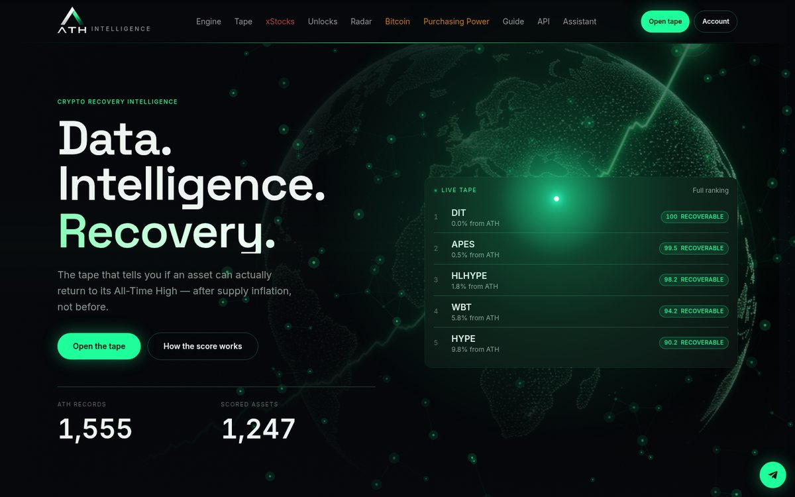
Crypto recovery intelligence, live at athintelligence.pro. It answers one question: can an asset really return to its all-time high after the supply issued since then? It stores the market cap and supply at each ATH, scores every asset with a deterministic Recovery Score and serves it all over a REST API. Built end to end: data collection, backend, database, UI and deploy. Inteligencia de recuperación cripto, online en athintelligence.pro. Responde una pregunta: ¿puede un activo volver de verdad a su máximo histórico después del supply que se emitió desde entonces? Guarda el market cap y el supply de cada ATH, puntúa cada activo con un Recovery Score determinista y expone todo por una API REST. Hecha de punta a punta: recolección de datos, backend, base de datos, UI y deploy.
Also: Cap lab (price at another market cap), developer docs with an x-api-key REST API and an assistant for the API endpoints. Además: Cap lab (precio a otro market cap), docs para desarrolladores con API REST por x-api-key y un asistente para los endpoints de la API.
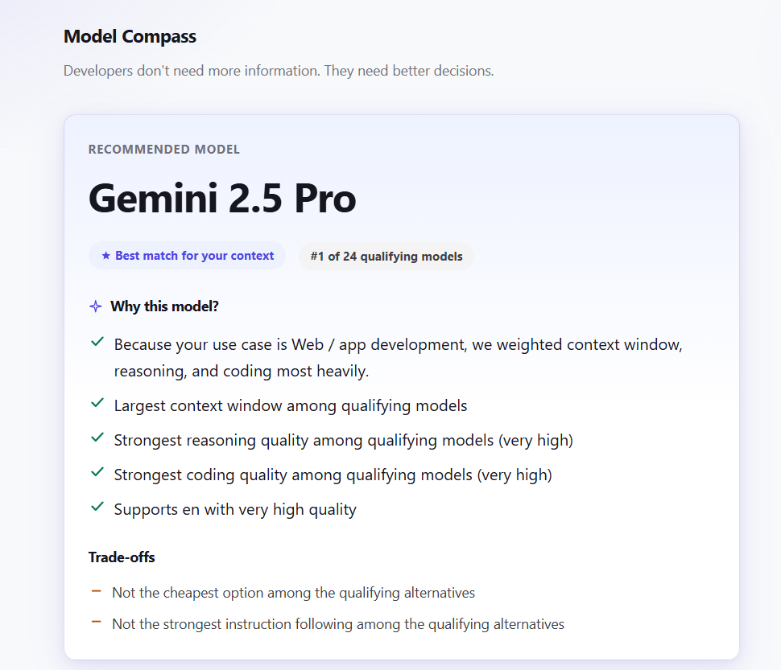
An open-source decision engine that helps developers choose the right AI model for their use case, budget, priorities, language and volume. Explainable, deterministic recommendations — not opinions. Un motor de decisión open source que ayuda a elegir el modelo de IA correcto según caso de uso, presupuesto, prioridades, idioma y volumen. Recomendaciones explicables y deterministas — no opiniones.
Python 3.11FastAPIpytestPre-1.0
github.com/LCAITECH/model-compass ↗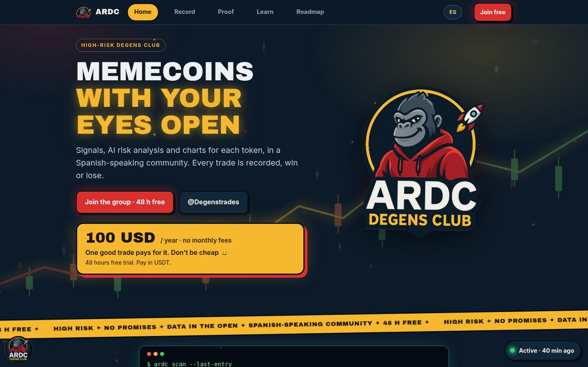
A Spanish-speaking community for high-risk crypto, focused on memecoin trading, which I co-run with a partner. Risk comes first: before every entry we check liquidity, holders, contract permissions (mint, freeze, honeypot) and locked liquidity. There is a free token analyzer with AI risk analysis, every trade goes into a public record (wins and losses), and the site has anti-scam security guides. No promises of returns. Comunidad de habla hispana de cripto de alto riesgo, enfocada en trading de memecoins, que co-dirijo con un socio. Primero el riesgo: antes de cada entrada se revisan liquidez, holders, permisos del contrato (mint, freeze, honeypot) y liquidez bloqueada. Tiene un analizador de tokens gratuito con análisis de riesgo con IA, cada trade queda en un registro público (ganadores y perdedores) y la web tiene guías de seguridad anti-scam. Sin promesas de rentabilidad.
MemecoinsSolana · BNB Chain · BaseAI risk analysisAnálisis de riesgo con IAPublic trade recordRegistro público de tradesAnti-scam
ardc.club ↗LCA ITECH is the company I founded in 2022. LCA Trading is its crypto trading and education community (since 2022) on Telegram, X, Instagram, YouTube and Discord — where I build and test in real life: Telegram bots, dashboards, exchange integrations and referral systems. LCA ITECH es la empresa que fundé en 2022. LCA Trading es su comunidad de trading y educación cripto (desde 2022) en Telegram, X, Instagram, YouTube y Discord — donde construyo y pruebo en la vida real: bots de Telegram, dashboards, integraciones con exchanges y sistemas de referidos.
Telegram botsDashboardsExchange APIsReferralsReferidos
x.com/LCA_ITECH ↗Internal multi-provider AI chat (Gemini, Claude, OpenAI, NVIDIA). Auto-routing picks the model by task and cost and spreads traffic across free tiers within their rate limits. The Arena runs the same prompt on several models in parallel. Chat de IA interno multi-proveedor (Gemini, Claude, OpenAI, NVIDIA). El auto-routing elige el modelo según la tarea y el costo, y reparte el tráfico entre niveles gratuitos respetando sus límites de uso. La Arena corre el mismo prompt en varios modelos en paralelo.
Under evaluation: given the interest it got on social media, I'm considering launching it as a subscription. En evaluación: por el interés que generó en redes, estoy evaluando lanzarlo como suscripción.
LLM routingAuto-routingGeminiClaudeOpenAINVIDIA
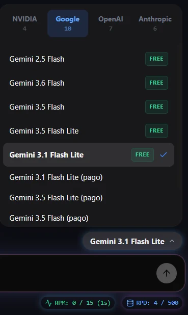
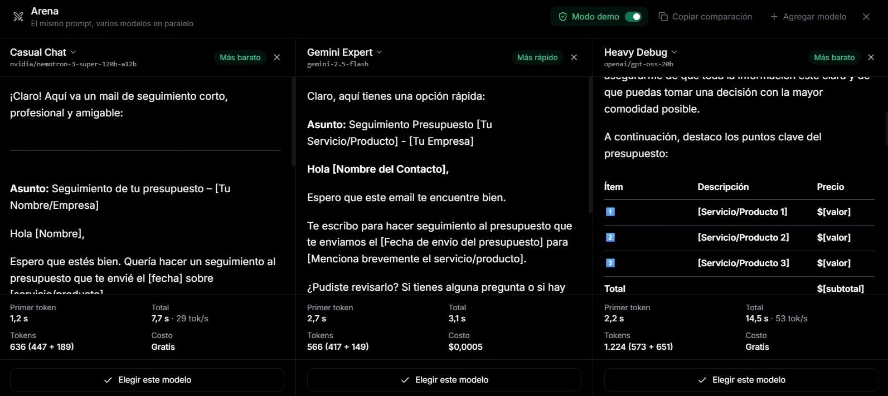
A public bot to try my work live, in English and Spanish: price and 24h change, distance to ATH, Fear & Greed, recent large trades on MEXC and an agent that answers crypto FAQs. Every reply shows its data source. Open source (MIT), running 24/7 on a Google Cloud VM with systemd. Un bot público para probar en vivo lo que construyo, en castellano e inglés: precio y variación 24 h, distancia al ATH, Fear & Greed, trades grandes recientes en MEXC y un agente que responde preguntas frecuentes sobre cripto. Cada respuesta muestra su fuente de datos. Código abierto (MIT), corriendo 24/7 en una VM de Google Cloud con systemd.
/price btc/precio btc/ath eth/feargreed/whales btc/ask/services/servicios
Open in Telegram ↗Abrir en Telegram ↗ Source code ↗Código en GitHub ↗
Free templates · Grok BotPlantillas gratuitas · Grok Bot
Free templates of the bots I use every day. Anyone can copy them into their own Grok Bot. Plantillas gratuitas de los bots que uso todos los días. Cualquiera puede copiarlas a su propio Grok Bot.
Grok Bot · templateplantilla
Bot to grow your X account with data, not guesswork: measures what works for you, suggests replies to viral posts with a one-tap link, and drafts posts and threads for you to publish yourself.Bot para hacer crecer tu cuenta de X con datos y no al voleo: mide qué te funciona, te sugiere respuestas a posts virales con un link de un toque y arma posts e hilos para que los publiques vos.
Grok Bot · templateplantilla
Complaints and discount-request bot for consumers in Argentina: drafts formal complaints with legal grounds to banks, private health insurers and utility/service companies, checks channels and deadlines, follows up, and prepares escalation to the BCRA, SSSalud, ENACOM or Consumer Protection.Bot de reclamos y pedidos de descuento para consumidores en Argentina: redacta reclamos formales con fundamento legal a bancos, prepagas y empresas de servicios, verifica canales y plazos, hace el seguimiento y prepara la escalada ante BCRA, SSSalud, ENACOM o Defensa del Consumidor.
Grok Bot · templateplantilla
DM and outreach bot for creators on X: finds accounts that need your services and drafts DMs for you, and tracks paid sponsors and bounties in your niche. It never sends anything without your review.Bot de DMs y outreach para creadores en X: busca cuentas que necesitan tus servicios y te arma borradores de DMs, rastrea sponsors pagos y bounties de tu nicho. Nunca manda nada sin tu revisión.
Grok Bot · templateplantilla
Country-by-country macro analysis bot: follows elections, budgets, central banks and rating agencies, and tells you how they could move country ETFs, indices, currencies and sovereign spreads, with long/short scenarios. It is information, not advice.Bot de análisis macro por país: sigue elecciones, presupuestos, bancos centrales y calificadoras, y te dice cómo pueden mover ETFs de país, índices, monedas y spreads soberanos, con escenarios long/short. Es información, no recomendación.
Grok Bot · templateplantilla
Trading signals bot: analyzes crypto and stock/ETF charts, builds setups with entry, stop and targets, drafts signal posts for X (always with DYOR) and alerts you when price hits your levels.Bot de señales de trading: analiza gráficos de cripto y acciones/ETFs, arma setups con entrada, stop y objetivos, redacta posts de señales para X (siempre con DYOR) y te avisa cuando el precio toca tus niveles.
Client work · Video productionClientes · Producción de video
Besides software, I produce video: an institutional film, a vertical reel and product videos for MercadoLibre listings.Además de software, hago producción de video: un video institucional, un reel vertical y videos de producto para publicaciones de MercadoLibre.
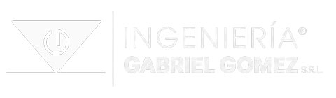
Ingeniería Gabriel Gomez SRL
✓ Verified clientCliente verificable“Muy buenos trabajos Leandro, muy profesional!”
MercadoLibre product videosVideos de producto para MercadoLibre
04 · JourneyTrayectoria
10+ years in tech. Every step added a layer: infrastructure, then crypto and DeFi, then automation, then AI. 10+ años en tecnología. Cada etapa sumó una capa: infraestructura, después cripto y DeFi, después automatización, después IA.
2015 – 2020
IT support company in Buenos Aires. Five years solving real problems for businesses and users — the base of how I think about systems that must not fail.Empresa de soporte IT en Buenos Aires. Cinco años resolviendo problemas reales de empresas y usuarios — la base de cómo pienso sistemas que no se pueden caer.
IT supportSoporte ITBuenos AiresGoogle IT Support Cert. (2020)IBM AI Foundations (2020)
2020 → today2020 → hoy
Binance launchpools, yield farming on Beefy, spot and futures. I also went through scams and rugpulls: that taught me to spot risks early, and today I design bots and systems with an anti-scam mindset.Launchpools de Binance, yield farming en Beefy, spot y futuros. También pasé por scams y rugpulls: eso me enseñó a detectar riesgos temprano, y hoy diseño bots y sistemas con mentalidad anti-scam.
Binance LaunchpoolBeefyDeFiDuke DeFi (2026)Anti-scam mindsetMentalidad anti-scam
2020 → today2020 → hoy
Invited to LABITCONF events in Buenos Aires. First partnership: BingX partner.Invitado a eventos de LABITCONF en Buenos Aires. Primer partnership: partner de BingX.
LABITCONFBingX Partner
2022
After two years building and learning hands-on in crypto, I founded LCA ITECH.Después de dos años construyendo y aprendiendo en la práctica en cripto, fundé LCA ITECH.
LCA ITECH
2022 → today2022 → hoy
Crypto trading and education community on Telegram, X, Instagram, YouTube and Discord.Comunidad de trading y educación cripto en Telegram, X, Instagram, YouTube y Discord.
TelegramDiscordXYouTube
Then → todayLuego → hoy
I started automating the community: Telegram bots, exchange integrations, referral flows and alerts.Empecé a automatizar la comunidad: bots de Telegram, integraciones con exchanges, flujos de referidos y alertas.
Telegram Bot APIPythonExchange APIsAPIs de exchanges
NowHoy
With a partner, I co-run a high-risk crypto community focused on memecoin trading: risk checks before every entry, a public trade record with wins and losses, and anti-scam guides.Con un socio co-dirijo una comunidad cripto de alto riesgo enfocada en trading de memecoins: chequeo de riesgo antes de cada entrada, registro público de trades con ganadores y perdedores, y guías anti-scam.
MemecoinsRisk managementGestión de riesgoAnti-scam
ardc.club ↗NowHoy
LLM agents and AI routing (LCA-GPT), the ATH Intelligence data platform (live) and the open-source Model Compass. Google AI and Google Cloud Generative AI Leader certificates (2026).Agentes con LLMs y ruteo de IA (LCA-GPT), la plataforma de datos ATH Intelligence (online) y el proyecto open source Model Compass. Certificados Google AI y Google Cloud Generative AI Leader (2026).
ATH IntelligenceModel CompassLCA-GPTFastAPIGCP
athintelligence.pro ↗05 · Stack
PythonFastAPIREST APIsWebhooksSQLTypeScript
OpenAIClaudeGeminiRAGAI agentsAgentes de IAModel routingRuteo de modelos
Exchange APIsAPIs de exchangesSpot & perpsDeFiBlockchain dataReferral systemsSistemas de referidos
Telegram Bot APIMakeGoogle SheetsRetries · logging · alertsReintentos · logging · alertas
Google Cloud (GCP)LinuxDockerSSHGitWindows ServerVMwareHyper-V
06 · Community experienceExperiencia en comunidades
I've been in crypto since 2020. Since 2022 I run the LCA Trading community, and today I also co-run ARDC, a memecoin trading community, with a partner. I share crypto, trading and AI content on X. I know what members ask, how scams work and what admins need. Estoy en cripto desde 2020. Desde 2022 llevo adelante la comunidad LCA Trading y hoy también co-dirijo con un socio ARDC, una comunidad de trading de memecoins. Comparto contenido de cripto, trading e IA en X. Sé qué pregunta la gente, cómo funcionan las estafas y qué necesitan los admins.
07 · CertificationsCertificaciones
Certificates from Duke University, Google and IBM on Coursera, issued to Leandro Hernan Buchter. Each one has a public verification link. Certificados de Duke University, Google e IBM en Coursera, a nombre de Leandro Hernan Buchter. Cada uno tiene su link público de verificación.
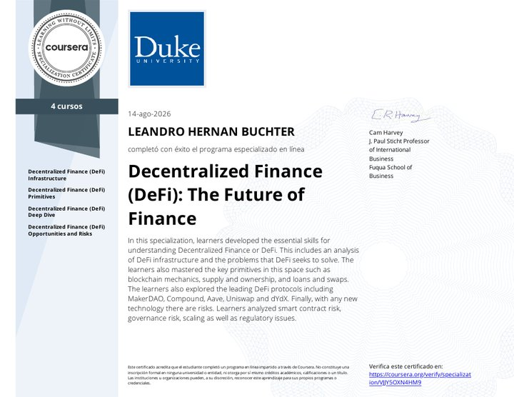
Duke University (Fuqua) · via CourseraDuke University (Fuqua) · vía Coursera
Specialization · MakerDAO, Compound, Aave, Uniswap, dYdX, smart contract risk, governance and regulationSpecialization · MakerDAO, Compound, Aave, Uniswap, dYdX, riesgo de smart contracts, gobernanza y regulación
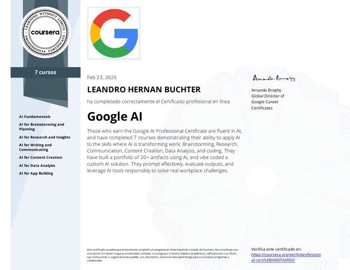
Google · via CourseraGoogle · vía Coursera
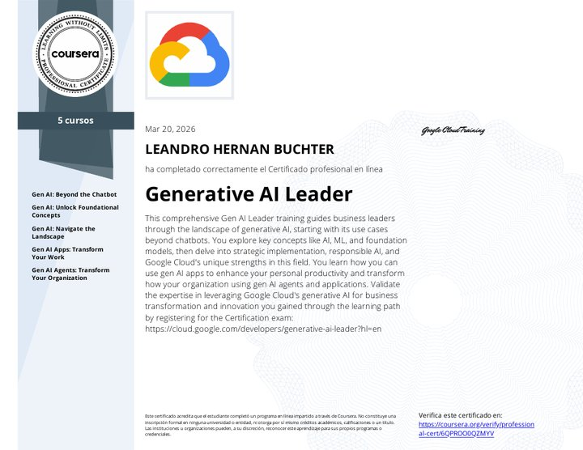
Google Cloud · via CourseraGoogle Cloud · vía Coursera
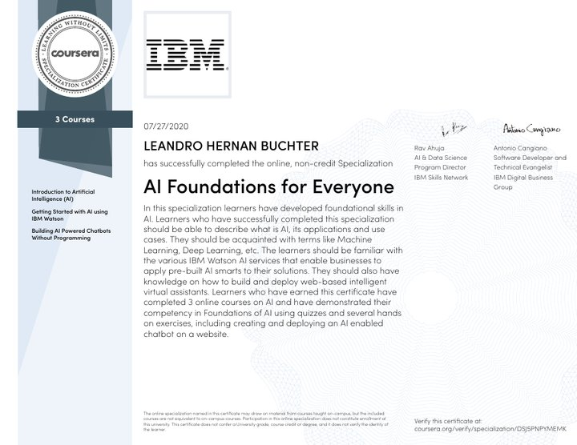
IBM Skills Network · via CourseraIBM Skills Network · vía Coursera
SpecializationSpecialization
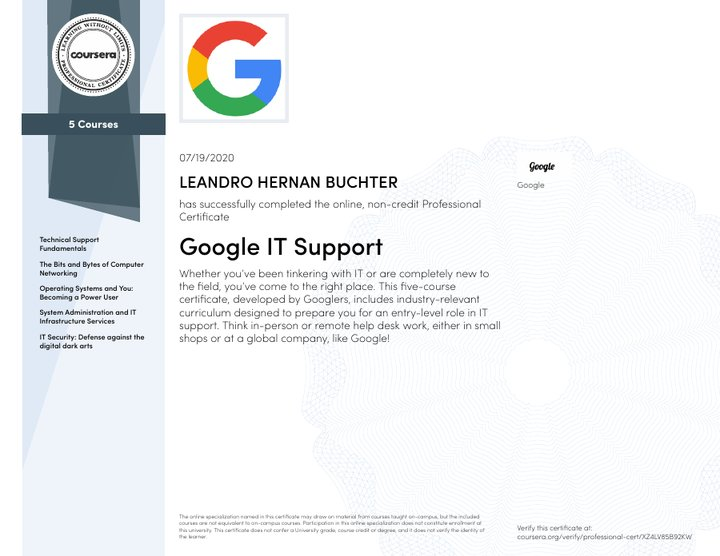
Google · via CourseraGoogle · vía Coursera
Google Cloud · NYIF · via CourseraGoogle Cloud · NYIF · vía Coursera
IBM · via CourseraIBM · vía Coursera
08 · ContactContacto
Tell me about your project. I review every request and reply by email with questions or a first idea. Contame de tu proyecto. Reviso cada consulta y te respondo por email con preguntas o una primera idea.